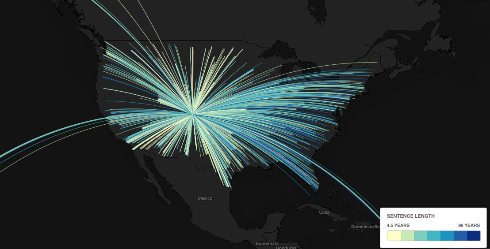

Instructor: Amanda Hickman
file > print composer)We already used head with the -n 100 flag) set, to output the first hundred lines of a file. Another good option is to just create a smaller table to work with:
ASSELECT * FROM example LIMIT 1000;
This will let you stumble around and figure out what you're trying to do without waiting for your computer to catch up with a larger data file. If QGIS is so slow that you can't get much done there are a few other good options to look into:
Actually create a spatial index. We'll do this to a data set today. We haven't talked a lot about indexing but it's (roughly) the process of creating a structured view of the data so that the computer can find it quickly. If you know you want to be able to search a particular column regularly, for instance, you'd want to create a search index for that column. This is more advanced than we need to go deep on, but creating a spatial index is always a good idea.
Turn off rendering (there's a checkbox in the lower right) so that QGIS isn't continually trying to re-draw.
Ask for help! If you're doing just fine with a smaller file, but the larger file is choking, there may be some ways to smooth it. The options will vary depending on your particular case so getting good at asking questions is key. I can't reiterate this enough.
Can you make your file smaller?
Few setup steps:
;/* make sure you're using it. */CREATE EXTENSION postgis;
When you import a CSV into QGIS directly, you have two options. If there's a latitude column and a longitude column you can just select "Point coordinates" as your Geometry definition, and identify the X (longitude) and Y (latitude) columns. The other option is Well Known Text which is a standardized format for identifying points, lines and polygons. WKT wants point definitions as POINT (lon lat).
If your data has a single column that you know includes the latitude and longitude but it isn't in WKT format:
location(37.7875044952742, -122.414163693123)(37.7657922226195, -122.420909958943)(37.7657922226195, -122.420909958943)(37.7657922226195, -122.420909958943)(37.7657922226195, -122.420909958943)(37.7657922226195, -122.420909958943)(37.783163427134, -122.411599278937)(37.783163427134, -122.411599278937)
You have a few options. You can use Open Refine to break out the latitude and longitude into their own columns. You could use a spreadsheet function, if your data is small enough to open in a spreadsheet. You could use SQL in postgres to find substrings and pull them into their own column.
Start by building up the SELECT statement:
SELECT location,btrim(location, '()'),split_part(location, ',', 1),split_part(btrim(location, '()'), ',', 1),split_part(btrim(location, '()'), ',', 2)FROM example;
Then pull it into it's own column:
ADD COLUMN longitude FLOAT,ADD COLUMN latitude FLOAT;UPDATE test SET longitude = split_part(btrim(location, '()'), ',', 2),latitude = split_part(btrim(location, '()'), ',', 1);
Read the error message. What does it actually say?
UPDATE example SET longitude = split_part(btrim(location, '()'), ',', 2)::float,latitude = split_part(btrim(location, '()'), ',', 1)::float;
Then you can export to a CSV and import the CSV into QGIS. But the whole point here is to start introducing PostGIS. So let's.
The first thing we need to do is actually CREATE EXTENSION postgis; -- but we've done that. So then we need to generate points in a format that
ADD COLUMN the_geom GEOMETRY;UPDATE example SET the_geom = ST_MakePoint(longitude, latitude);
So now we need to connect in QGIS. You can go to Layer > Add Layer > Postgis or look for the elephant on the sidebar.
The connection settings are probably the same as for Postico.
Once you've successfully connected, you might have to look for the "Also list tables with no geometry" check box, and check it.
A few more observations:
Look for Database > DB Manager in the menu. You should be able to drill down to PostGIS > Localhost > public > {tablename} and you'll see some warnings.
 No spatial index defined (create it)
Use the link to create a spatial index. And then add a primary key, with:
ADD PRIMARY KEY (call_number, unit_id);
We're looking for a way to capture all the shapes in one layer that intersect with a single shape in another layer.
The census publishes zipcode maps of the US: https://www.census.gov/geo/maps-data/data/cbf/cbf_zcta.html
We already have a map of US states, from Week 9 -- we're going to start with California.
To use these in PostGIS, we need to convert them into SQL, but you've got a built in terminal utility, shp2pgsql that does exactly that:
shp2pgsql cb_2016_us_zcta510_500k.shp zipcodes postgres > cb_2016_us_zcta510_500k.sqlshp2pgsql gz_2010_us_040_00_20m.shp us_states postgres > gz_2010_us_040_00_20m.sql
You can either use Postico's "load query" button, or load these right at the command line with:
psql -d week11_postgis -f cb_2016_us_zcta510_500k.sqlpsql -d week11_postgis -f gz_2010_us_040_00_20m.sql
There are a few that sound like they might be what we want: ST_Within, ST_Contains, ST_Intersection , ST_Intersects. Take a look at the documentation: how do these differ?
SELECTus_states.geom AS state_gom,us_states.state AS state,zipcodes.zcta5ce10 AS zipcode,zipcodes.geom as zip_geomFROMus_states, zipcodesWHEREST_Intersects(zipcodes.geom, us_states.geom) AND us_states.name = 'California';
So then we have a smaller set that we can work with, so let's actually make a table out of that:
ASSELECT zipcodes.* FROM zipcodes, us_statesWHERE ST_Intersects(zipcodes.geom, us_states.geom) AND us_states.name = 'California';
Alameda County publishes a county boundary file. So try it again. Remember that your steps are:
shp2pgsql to convert the Shapefile into SQL.You're going to wind up capturing a few zipcodes that only cross the county line in tiny spots. Can you brainstorm some ways to address those?
Find the length of each line in a map of bike lanes.
Draw flight maps. Here's the SQL I used, and one of the questions I asked as I was getting my bearings. And the final map:

Everyone has got a lot to work on, so let's spend some time in it.
At this point everyone should have met with one of us to talk through what your pitch / reporting plan needs.
The next update to your data journalism project is due Saturday April 7 at 8 pm.
Updates should be cumulative: your submission should include everything we need to evaluate your work. At this point you should be making progress both in analyzing your data and understanding the underlying story or potential stories. With this update, you should clearly and concisely:
+ Describe the analysis you have conducted so far. Frame your description in terms of the questions you have asked of the data, and the answers you have obtained. Include the data you are using, a description of how you obtained it, and any code you have used for your analysis.+ In clear sentences, describe the main conclusions you have drawn so far from your analysis.+ Describe the further questions you wish to ask of your data.+ Describe any obstacles you face. Important: you should be seeking help from your instructors when you get stuck! Do not wait until this assignment deadline for that.+ Outline the additional reporting, beyond data analysis, that would be required to turn this project into a story.
We do want to see the code you have used in your analysis, but please do not show us every last SELECT/ALTER/UPDATE query that you used. Clean your work up so that someone can replicate it without having to replicate the casting about that we all do as we find our way through this stuff. This isn't just about making busy work. These final scripts are your resource to refer back to when you inevitably find yourself facing a problem you've solved before and trying to remember the solution. They also become your resource when you shelve a story and come back to it after two months working on some other breaking project: you want to be able to get yourself back up to speed on the work you've already done.